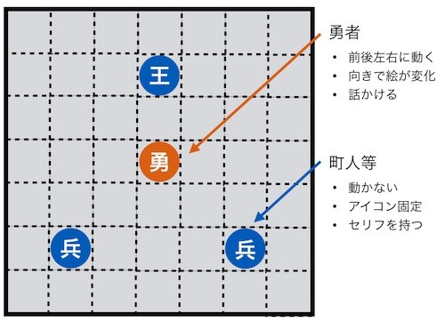
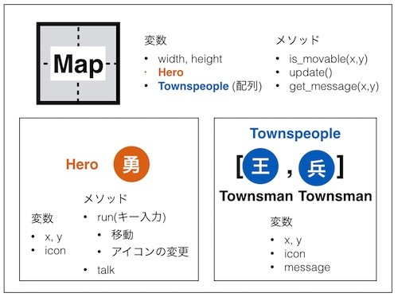
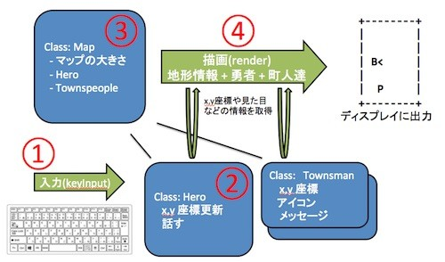
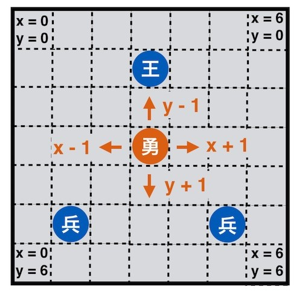
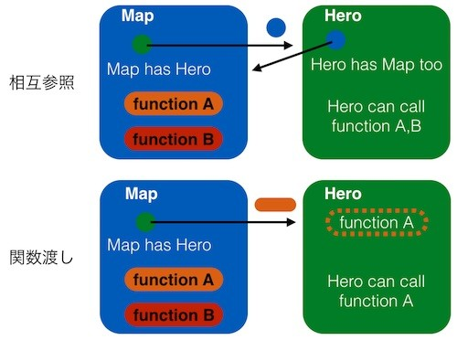

ゲーム作り
本記事の内容
概要
あとで書く
設計
本章では今まで学んだオブジェクト指向を復習する意味で、国民的某RPGを簡単にしたゲームを作ります。 所々の事情でオリジナルの画像は出せないのですが、以下のような画面は見たことがあるのではないでしょうか。

オリジナルのとおりであればモンスターとのバトルなどもあるのでしょうが、 今回はとりあえず以下のものを作ることをゴールとします。
- 勇者が長方形型のマップを歩く
- 勇者は町人と話すことができる
開発の流れなのですが、最初にすべてのクラスを設計して一気に詳細を作り込むのではなく、 機能拡張をしながら徐々に作りこんでいきたいと思います。 ただ、何も考えずに作り始めると後々の修正が大変になるため、 以下の図ような Map クラス(町などのフィールド)が Hero クラス(勇者)とTownsmanクラス(王様や町人など)を持つアーキテクチャにしたいと思います。

なぜこのようなアーキテクチャとなったか理解する必要があります。 まずゲームがどのように構成されているかよく考えてみてください。 ゲームの構成要素にはマップがあり、そこに勇者や町人がいます。そのため、Mapクラスを作り、 それに勇者の Heroクラスや、町人のTownsmanクラスを持たせるという構造が自然です。 勇者は1人であるためひとつのオブジェクトがあり、町人は複数いるため、Townsman を複数持つtownspeopleという配列を使っています。
ゲームの操作の実装方法は色々考えられますが、今回はキーボード入力をHeroクラスが読み取り、 その入力に応じて画面をアップデートするというものにします。 実装手順は大まかに以下のような工程とします。
- Heroクラス1: キーボードからの入力を読み取る
- Heroクラス2: 入力に応じて、x,y座標の更新と向きに応じたアイコンのアップデート
- Mapクラスの実装: 主人公がマップを歩き回れるようにする
- Townsmanクラスの実装: 主人公に会話機能の追加
この1～4の実装が完了すると、最終的には以下の図のような形でプログラムが動くようになります。

図を見ると複雑ですが、勇者がキー入力を受け取ると座標の更新や話すといったアクションを行い、 マップがそれらを描画するという流れです。
勇者の実装
まず第1工程として、勇者Heroクラスがキー入力を読み取ることから始めます。 これにはキーボードのキー入力を読み取る関数を利用します。 以前、raw_input()を使ってEnterが押されるまでの複数のキー入力をまとめて読み取ることをしましたが、 それのひとつのキー版だと思っていただければ大丈夫です。
残念ながらPythonにはキー入力をひとつだけ読み取る標準ライブラリの関数がないので、 今回はgetchという既存の外部ライブラリを使います。 おそらくget charに名前が由来しています。 自分でダウンロードしていただいてもかまわないのですが、以下に私が利用したコードも一応置いておきます。
getch.py http://www.yuichi.com/python3-2/resources/getch.py
getch を使ってさっそくコードを書き始めてみます。基本的にはインタラクティブなプログラムのため、 while文で無限ループをさせてキーを読み取り表示するということを繰り返します。 なお、IDLEなどで動作させると動かない可能性があるのでターミナルやコマンドプロンプトから実行してください。
プログラムを以下に記載します。
import getch KEY_CTRL_C = 3 class Hero: def run(self): while(True): key = ord(getch.getch()) if(key == KEY_CTRL_C): print('bye!!') break; print('key input: ' + str(key)) hero = Hero() hero.run()
少し丁寧に説明します。まずプログラムファイルと同じディレクトリにあるgetch.pyをimportしています。 そしてHeroクラスのrunメソッドを実行すると無限ループに入り、以下の動作を繰り返します。
- キー入力を読み取る
- 入力値をord関数(文字からユニコードへの変換)を使って整数にする
- 入力値を画面に表示
ただ、これだけだとプログラムを終了できなくなるので、Ctrl-Cが入力されたらプログラムを終了するようにしています。 具体的には、Ctrl-Cが押されたらkey = ord(getch.getch()) によりkeyは3になります。 そしてif文でkeyが3になっているかを確認しています。 これは要するにCtrl-Cが押されたかということの確認と同じです。 なお、Ctrl-C の値を分かりやすくするために定数を使っています。 前書でお伝えしたように3を if 文に直接埋め込んでしまうと、それはマジックナンバー(他の人にはよくわからない数値)となります。
このプログラムを起動して a, s, d, f, Ctrl-C と押すと以下のようになります。
% python3 test.py key input: 97 # a key input: 115 # s key input: 100 # d key input: 102 # f bye!! # Ctrl-C
勇者クラスがキー入力を読み取れるようになったので、次はマップ上の勇者を動かすための実装を始めます。 まず以下の図を見て下さい。勇者や王様がいるマップにはグリッドがあり、そこにキャラクターが配置されていることがわかります。

この図でいうと王様はx = 3, y = 1にいます。 そして勇者はx =3, y = 3にいます。
勇者は基本的にこのグリッドに沿って動きます。 そのため、今回は先程のHeroクラスを押されたキーに応じてx,y座標を更新し、 キャラクターのアイコンを向きに応じたものに変化させるという拡張をします。 アイコンは上向きが ^ 、左が < 、右が > 、下が V となります。要するに矢印です。
なお、キーボードの矢印キーは機種依存のようでしたので代わりに、 キーと移動方向のマッピングを以下のようにしています。
- 上: w
- 左: a
- 右: s
- 下: z
コードを以下に記載します。
import getch KEY_CTRL_C = 3 KEY_W = 119 KEY_A = 97 KEY_S = 115 KEY_Z = 122 class Hero: def __init__(self, x, y): self.x = x self.y = y self.icon = '^' def run(self): print('-----------------------------') print('w:up, a:left, s:right, z:down') print('ctrl-c:quit') print('-----------------------------') while(True): key = ord(getch.getch()) if(key == KEY_CTRL_C): # Quit print('bye!!') break; elif(key == KEY_W): # Up self.icon = '^' self.y -= 1 elif(key == KEY_A): # Left self.icon = '<' self.x -= 1 elif(key == KEY_S): # Right self.icon = '>' self.x += 1 elif(key == KEY_Z): # Down self.icon = 'V' self.y += 1 else: continue print('ICON:{}, X:{}, Y:{}'.format(self.icon, self.x, self.y)) hero = Hero(0, 0) hero.run()
先ほどのコードからの変更点としては、コンストラクタでx,y座標とアイコンを初期化し、 キー入力に応じてx, yの値とアイコンを更新するようにしたことが挙げられます。 また最初にキーの使い方のメッセージも出しています。 わかると思いますが左に行くということは x 座標が1 減るということなので、 'self.x -= 1' としてxの値を1減らしています。 他の方向もこれと同じで座標に +-1しています。
実行すると以下のようになります。
$ python3 test.py ----------------------------- w:up, a:left, s:right, z:down ctrl-c:quit ----------------------------- ICON:<, X:-1, Y:0 ICON:<, X:-2, Y:0 ICON:V, X:-2, Y:1 ICON:V, X:-2, Y:2 ICON:>, X:-1, Y:2 ICON:>, X:0, Y:2 ICON:^, X:0, Y:1 ICON:^, X:0, Y:0 bye!!
押されたキーによってアイコンが変更され、x,y座標が更新されていることがわかります。
マップの実装
勇者の座標を更新できるようになったので、次は実際にマップを作成して勇者を動かせるようにしたいと思います。 実装の流れとしてはまず Mapクラスを作成し、先ほど作った Hero クラスをそれにあわせた形で改良するというものです。
Map を作るにあたり考慮する点は以下となります。
- Map は決められた大きさを持つ (width, height)
- 勇者はマップの外には出れない
- フィールドの描画は Map クラスの仕事
上記の「勇者はマップの外には出られない」というルールを実現するために、 勇者が自分のx, y座標を更新する前に「そこに移動できるか」を確認し、移動できる場合のみ座標を更新します。
たとえばx = 1, y = 0にいる勇者が左に行きたい場合、 「ひとつ左のマスである x = 0, y = 0 に移動できるか」を確認し、 動けるので座標を更新します。 そして勇者のアイコンの向きを左に更新します。
一方、x = 1, y = 0の際に上に異動したい場合は「ひとつ上のマスであるx = 1, y = -1に移動できるか」を確認し、 これが枠外のため動けないので座標を更新しません。
ただ、勇者のアイコンの向きだけは上向きに更新します。 次に「フィールドの描画はMapクラスの仕事」ですが、 マップの描画処理を勇者がやるのはオブジェクト指向として不自然なのでマップで実装します。 ただ、描画の契機は「勇者がなんらかのアクションを起こしたこと」にあるので、 勇者オブジェクトがマップオブジェクトの描画処理を呼び出すことになります。
まず新しく作ったマップクラスのコードを見てみます。 重要なのは勇者が動けるか判定するis_movableメソッドとマップを描画するdrawメソッドを、 コンストラクタ内で Hero インスタンスに対して関数渡しで与えている点です。
import getch KEY_CTRL_C = 3 KEY_W = 119 KEY_A = 97 KEY_S = 115 KEY_Z = 122 class Map: def __init__(self, width, height): self.width = width self.height = height # 関数渡しで下記2つのメソッドを勇者インスタンスに渡す self.hero = Hero(3, 3, self.is_movable, self.draw) # ゲームを開始 def run(self): self.hero.run() # 勇者が座標 x, y に動ければ True を返すメソッド def is_movable(self, x, y): if(x < 0): return False elif(self.width-1 < x): return False elif(y < 0): return False elif(self.height-1 < y): return False return True # 画面に現在の状態を描画するメソッド def draw(self): # 辞書のキーに x,y のタプル、バリューにキャラクターアイコンを登録 characters = {} characters[(self.hero.x, self.hero.y)] = self.hero.icon # 各行をテキストで返すメソッド内の関数 def get_row(y): row_list = [] row_list.append('|') # 行の左端 for x in range(0, self.width): # (x,y) にキャラクターがいればそれを描画し、いなければ空白を描画 if((x, y) in characters): row_list.append(characters[(x,y)]) else: row_list.append(' ') row_list.append('|\n') # 行の右端 return ''.join(row_list) # 各業を連結してマップを作成 map_list = [] map_list.append('+{}+\n'.format('-' * self.width)) # 一番上の行 for y in range(0, self.height): # 各行をループで回す map_list.append(get_row(y)) map_list.append('+{}+\n'.format('-' * self.width)) # 一番下の行 # マップを print で描画 print(''.join(map_list)) # Hero クラスの実装に続く
Hero クラスに移る前に、まず新しく作ったマップクラスについて説明します。 プログラムの設計で話したように、マップオブジェクトが勇者オブジェクトを持つコンポジションがコンストラクタで実現されています。 また、勇者がある x,y 座標に移動できるかの判定は勇者というよりもマップに依存しているため、 その判定は勇者クラスではなくマップクラスのis_movableというメソッドに実装しています。 このメソッドに勇者が移動したい先のx, y座標を渡すと、それがマップの上限、下限からはみ出ていないかをチェックし、 はみ出ていれば False(移動できない)、はみ出ていなければTrue(移動できる)を返します。 そして勇者はこの結果に従って自分の座標を更新します。 そしてdrawメソッドはマップを枠付きで表示し、勇者も座標に沿った位置に描画されます。 コードを読んでみれば何をやっているかわかると思いますが、以下のように描画しています。
- 勇者などのキャラクターを辞書に登録。キーを座標のタプル (x座標,y座標)、Valueをアイコンとしている
- 一番上の行(枠)を表示
- 左端の枠を表示
- 列の1マスを表示。キャラクターがいればアイコン、いなければ空白。これを列数(幅)繰り返す
- 右端の枠を表示し改行
- 3～5をマップの行数(高さ)繰り返す
- 一番下の列(枠)を表示
なお、実際は毎回プリントするのではなく、リストに文字列をどんどん追加していき最後にそれを画面に出力させています。 またステップ3-5 の処理が複雑になっているため、それをメソッド内の関数get_row()として切り出しています。 この関数は一度しか呼び出されることがないため必ずしも作らず「列の処理のループ」を「行の処理のループ」に埋め込むこともできますが、 切り出すことによってプログラムの見通しがよくなっています。
コンストラクタである init を見てもらうとわかりますが、 このis_movableメソッドとupdateメソッドは「関数渡し(メソッド渡し)」を使ってHeroクラスに渡されています。 こうすることでマップクラスのメソッドであるis_movableなどを、 Mapのインスタンスを経由せずに勇者クラスが直接呼び出せるようにしています。 これはHeroクラスに親であるのMapクラスのインスタンスを渡すよりも「意図しない使い方をされない」という面で優れています。
オブジェクトの相互参照を防ぐ
先ほどの例では Mapクラスのオブジェクトは Hero オブジェクトのメソッドを呼び出し、 Hero オブジェクトも Map クラスのメソッドを使っていました。 このように2つのオブジェクトがお互いに利用しあう関係を「相互参照」と呼んでいます。
オブジェクトの相互参照は複雑なプログラムを組む場合はよく発生します。 ただ、これは「お互いのオブジェクトの公開されている属性をなんでも使える」ということと同義であるため、 両者のプログラムの遷移がかなり複雑になります。 例えばオブジェクトAがオブジェクトBのメソッド1を呼び出し、 それがオブジェクトAのメソッド3を呼び出し、.. というような形でお互いがお互いを呼び合うプログラムが作成できてしまいます。
この問題は先の章にて扱った関数渡し(メソッド渡し)を使うことでかなり改善できます。 なぜなら2つのオブジェクトがお互いを持ち合うのではなく、本当に処理に必要なメソッドのみを相手に渡し、 それ以外の公開された属性を呼び出されることがなくなるからです。
両者の手法の違いは少しむずかしいと思うので以下の図を使って説明します。

上記図では「MapがHero を持っていて、HeroはMapのメソッドを使いたい」とします。 ただ、Heroが使うMapのメソッドはfunctio Aのみであり、Mapのfunction Bは Hero とは関係のない別の用途で使われているとしましょう。 他のオブジェクトから操作されるため function B は隠せないのですが、 Map としては function B を Hero から呼び出してほしくありません。
Hero クラスはMapクラスの function Aを呼び出す必要があり、 なんとかしてこれを実現しなければなりません。 図の上側の例では、MapがHeroインスタンスを作成するときに自分自身をインスタンスとしてheroに渡します。 Heroインスタンスは渡されたMapのインスタンスを経由してMapのメソッド function Aを呼び出します。 たとえば以下のコードになります。
class Map: def __init__(self): # 自分自身のインスタンスを渡す(相互参照になる) self.hero = Hero(self) # Hero クラスが使うメソッド def function_a(self): print('Map: function a') # Hero クラスは本来使わないメソッド def function_b(self): print('Map: function b') def test(self): self.hero.test() class Hero: def __init__(self, map_): self.map = map_ def test(self): self.map.function_a() self.map.function_b() map_ = Map() map_.test() # Map: function a # Map: function b
このとき、HeroのインスタンスはMapのインスタンスを経由してfunction_aを呼び出せていますが、 本来Heroが触るべきでないfunction_bまで呼び出せてしまっています。 function_b は Hero に隠されてはいないため、 アクセスしてほしくないのであれば Hero の実装で function_b を使わないように「注意をする」というなんとも他人だよりな解決法が必要です。
一方、下側の例ではコンストラクタで関数渡しをしてfunction_aをHeroインスタンスに渡しているので、 function_bは普通であれば呼びだされません。 下側の例のサンプルコードは以下となります。
class Map: def __init__(self): # メソッドを関数渡し self.hero = Hero(self.function_a) # Hero クラスが使うメソッド def function_a(self): print('function a') # Hero クラスは使わないメソッド def function_b(self): print('function b') def test(self): self.hero.test() class Hero: def __init__(self, function_a): self.function_a = function_a def test(self): self.function_a() m = Map() m.test() # function a
コードとしては両者の違いはそれほど多くないのですが、 想定されない使い方をされるリスクは大きく異なります。
Map の実装(続き)
話を戻しましょう。次に更新したHeroクラスを示します。
# Map クラスの実装からの続き class Hero: # マップの is_movable と draw メソッドを受け取り登録 def __init__(self, x, y, is_movable, draw_map): self.x = x self.y = y self.icon = '^' self.is_movable = is_movable self.draw_map = draw_map def run(self): print('-----------------------------') print('w:up, a:left, s:right, z:down') print('ctrl-c:quit') print('-----------------------------') self.draw_map() while(True): key = ord(getch.getch()) if(key == KEY_CTRL_C): # Quit print('bye!!') break; elif(key == KEY_W): # Up self.icon = '^' # 移動できるか is_movable で確認し、移動できる場合のみ座標を更新 if(self.is_movable(self.x, self.y-1)): self.y -= 1 elif(key == KEY_A): # Left self.icon = '<' if(self.is_movable(self.x-1, self.y)): self.x -= 1 elif(key == KEY_S): # Right self.icon = '>' if(self.is_movable(self.x+1, self.y)): self.x += 1 elif(key == KEY_Z): # Down self.icon = 'V' if(self.is_movable(self.x, self.y+1)): self.y += 1 else: continue # マップの draw メソッドを呼び出し self.draw_map() dqmap = Map(7,7) dqmap.run()
見てもらうとわかるように、Heroクラスのコンストラクタで Map クラスから関数渡しで渡されたis_movableとupdateをインスタンス変数として登録しています。 なんども言っているように Python の関数やメソッドは変数に格納できて呼び出すこともできますので、 それが Hero の run メソッドの中で使われています。
実行すると以下のような画面が表示されるはずです。
----------------------------- w:up, a:left, s:right, z:down ctrl-c:quit ----------------------------- +-------+ | | | | | | | ^ | | | | | | | +-------+
移動キーを押すと勇者が動きまわることが確認でき、Map の is_movable メソッドのおかげでマップの端に行っても枠を超えて外に出ていきません 。
町人と会話機能の実装
最後に町人のマップへの表示及び、勇者と町人との会話機能を実装します。 まず町人のクラスを実装します。属性にx,y座標とアイコン、それからメッセージを持たせています。 メソッドはありません。
class Townsman: def __init__(self, x, y, icon, message): self.x = x self.y = y self.icon = icon self.message = message
そしてMapクラスに町人を配列として持たせています。マップクラスのコンストラクタにて町人のリストに初期化した町人の登録をしています。
class Map: def __init__(self, width, height): self.width = width self.height = height self.hero = Hero(3, 3, self.is_movable, self.get_message, self.draw) # マップは町人をリストで保持 self.townspeople = [] self.townspeople.append(Townsman(3, 1, 'K', "I'm King")) self.townspeople.append(Townsman(1, 5, 'S', "I'm Soldier 1")) self.townspeople.append(Townsman(5, 5, 'S', "I'm Soldier 2"))
Hero クラスの初期化を見てもらうとわかりますが、is_movable と draw メソッドに加えて get_message メソッドも渡しています。新しく実装された会話機能はこのメソッドを呼び出すことで指定された座標にいる町人のメッセージを取得します。 以下に get_messageの実装を示します。
def get_message(self, x, y): for townsman in self.townspeople: if(x == townsman.x and y == townsman.y): return townsman.message return 'no one exists..'
指定したx,y座標の町人からメッセージを取得します。実装を見ればわかりますが町人の配列をループで回して、 そこに町人がいればメッセージを取得して返しています。 ループで何もヒットしない、つまりそこに町人がいなければ「誰もいない」というメッセージを返しています。
またis_movable関数で町の枠の判定だけでなく、「そこに町人がいるか」という判定も追加しています。 主人公が町人のいるマスに動けないようにするためです。
def is_movable(self, x, y): # 枠の判定 if(x < 0): return False elif(self.width-1 < x): return False elif(y < 0): return False elif(self.height-1 < y): return False # 町人の判定 for townsman in self.townspeople: if(x == townsman.x and y == townsman.y): return False return True
次にHeroクラスです。これは簡単で、Mapで定義されたget_message関数を関数渡しで受け取り、 キーdを押されたときに呼び出すようにしています。 直接勇者オブジェクトが町人オブジェクトの値を読み込まずに、 Map オブジェクトを経由して値を取得することでプログラムの遷移は複雑になるもののオブジェクトとオブジェクトの関係がシンプルに保たれています。
class Hero: # マップの is_movable と draw メソッドを受け取り登録 def __init__(self, x, y, is_movable, get_message, draw_map): self.x = x self.y = y self.icon = '^' self.is_movable = is_movable self.get_message = get_message self.draw_map = draw_map def run(self): print('-----------------------------') print('w:up, a:left, s:right, z:down') print('ctrl-c:quit') print('-----------------------------') self.draw_map('') while(True): message = '' key = ord(getch.getch()) if(key == KEY_CTRL_C): # Quit print('bye!!') break; elif(key == KEY_W): # Up self.icon = '^' if(self.is_movable(self.x, self.y-1)): self.y -= 1 elif(key == KEY_A): # Left self.icon = '<' if(self.is_movable(self.x-1, self.y)): self.x -= 1 elif(key == KEY_S): # Right self.icon = '>' if(self.is_movable(self.x+1, self.y)): self.x += 1 elif(key == KEY_Z): # Down self.icon = 'V' if(self.is_movable(self.x, self.y+1)): self.y += 1 elif(key == KEY_D): # TALK # 会話をしてメッセージを取得 message = self.talk() else: continue # マップの draw メソッドを呼び出し self.draw_map(message)
dを押されたときにどの座標の住人に話しかけるかは主人公が向いている方向で変わってきます。 そのため、メソッドtalkにて向いている方向に応じた一歩先のx,y座標を求め、その座標のメッセージをマップから取得します。
def talk(self): message = '' if(self.icon == '^'): message = self.get_message(self.x, self.y-1) elif(self.icon == '<'): message = self.get_message(self.x-1, self.y) elif(self.icon == '>'): message = self.get_message(self.x+1, self.y) elif(self.icon == 'V'): message = self.get_message(self.x, self.y+1) return message
勇者が呼び出すマップの描画メソッドにも若干の変更が加えられています。 具体的には町人のアイコンの描画及びメッセージの描画が加えられています。
def draw(self, message): characters = {} characters[(self.hero.x, self.hero.y)] = self.hero.icon # キャラクターアイコンの辞書に町人を追加 for townsman in self.townspeople: characters[(townsman.x, townsman.y)] = townsman.icon def get_row(y): row_list = [] row_list.append('|') for x in range(0, self.width): if((x, y) in characters): row_list.append(characters[(x,y)]) else: row_list.append(' ') row_list.append('|\n') return ''.join(row_list) map_list = [] map_list.append('+{}+\n'.format('-' * self.width)) for y in range(0, self.height): map_list.append(get_row(y)) map_list.append('+{}+\n'.format('-' * self.width)) # メッセージを描画 map_list.append('{}\n'.format('#' * 10)) map_list.append(message + '\n') map_list.append('{}\n'.format('#' * 10)) print(''.join(map_list))
以前のメソッドとそれほど大きな違いはありませんが、引数に描画するメッセージが追加され、 それが今までのリストの下に描画されています。
この新しいプログラムを実行してみます。
+-------+ | | | K< | | | | | | | | S S | | | +-------+ ########## I'm King ##########
町人に勇者の向きを合わせて会話ボタン d を押すとメッセージが取得できています。
長々とゲームの実装を通じてオブジェクト指向のプログラミングについて学んできました。 誰が何を持ち、どう連携するかを意識してコードを書くのがオブジェクト指向上達のポイントです。
 印刷する
印刷する